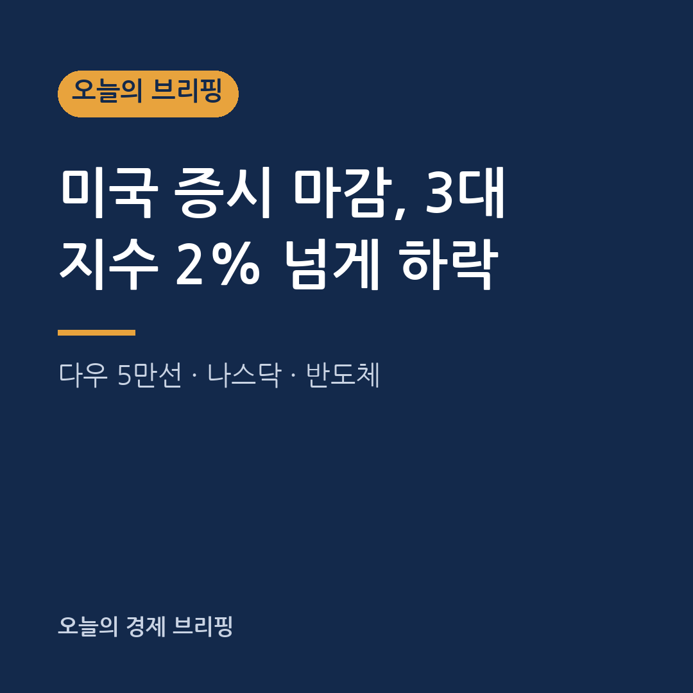
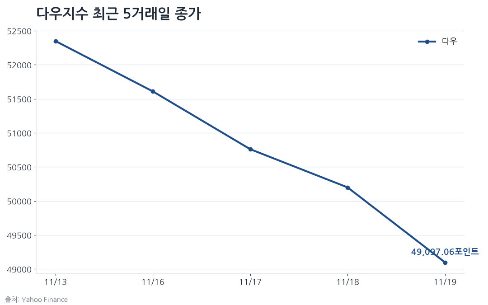

2026-11-20-0814-tistory 발행 키트 · 이 페이지는 검색에 노출되지 않습니다.
제목
카테고리
오늘의 브리핑태그
본문 (그림·표 포함)
휴대폰 블로그 앱에서는 그림이 같이 붙지 않을 수 있어요. 그때는 [글자만 복사] 후 아래 이미지를 저장해 [그래프1]·[표1] 자리에 첨부하세요.
핵심 요약: 11월 19일(현지시간) 미국 3대 지수는 모두 2% 이상 하락했습니다. 앤트로픽의 나스닥 상장 첫날이었지만 AI·반도체주 약세가 시장 전체를 눌렀습니다.

▶ 마감 시세 다우존스 산업평균지수는 49,097.06으로 2.19% 하락해 5만 선을 내줬습니다. S&P500은 7,175.83(-2.02%), 나스닥 종합지수는 23,879.20(-2.25%)으로 마감했습니다.
반도체 업종 흐름을 보여 주는 필라델피아 반도체지수는 9,419.72로 2.41% 내려 낙폭이 가장 컸습니다.
미국 증시·거시지표 (11월 19일 마감)
| 항목 | 종가 | 전일 대비 |
|---|---|---|
| 다우 | 49,097.06 | -2.19% |
| S&P500 | 7,175.83 | -2.02% |
| 나스닥 | 23,879.20 | -2.25% |
| 필라델피아 반도체 | 9,419.72 | -2.41% |
| 미 국채 10년물 금리 | 5.05% | -0.01%포인트 |
| 원·달러 환율 | 1,333.62원 | +0.05% |
| WTI 유가 | 83.09달러 | -0.2% |
출처: Yahoo Finance
다우지수의 5거래일 흐름을 보면 13일 52,347.55에서 19일 49,097.06으로, 약 3,250포인트 낮아졌습니다.

▶ 배경: 하락 요인 정리 첫째, 앤트로픽 상장 이후의 차익 실현 매물입니다. 앤트로픽은 공모가 대비 34% 높은 111.5달러에 거래를 시작했으나 종가는 97.17달러로, 공모가보다 17% 높은 수준에 그쳤습니다. 상장 기대로 올랐던 AI 관련주가 재료 소멸 국면에서 팔렸다는 해석이 나옵니다.
둘째, 반도체 공급망을 둘러싼 불확실성입니다. 파이낸셜타임스 보도에 따르면 삼성전자와 TSMC는 미국이 새로 도입한 수출통제 영향으로 중국 고객사에 대한 일부 칩 출하를 중단했습니다.
▶ 거시 지표 미 국채 10년물 금리(장기 시장금리의 기준)는 5.05%로 전일 대비 0.01%포인트 낮아졌습니다. 원·달러 환율은 1,333.62원으로 0.05% 상승했고, WTI 유가는 배럴당 83.09달러로 0.2% 하락했습니다.
▶ 국내 시장 영향과 확인할 점 미국 반도체지수 약세는 코스피 반도체 업종의 투자심리에 부담 요인으로 거론됩니다. 외국인은 지난 10월 국내 주식을 26조 원 가까이 순매도했고 두 달 연속 매도세가 이어진 만큼, 오늘 장에서는 외국인 수급 방향이 변수입니다.
확인할 항목은 세 가지입니다. 반도체 대형주의 장 초반 흐름, 중국 수출통제 관련 추가 보도, 앤트로픽 주가의 이틀째 움직임입니다.
▶ 정리 1. 11월 19일 미국 3대 지수는 2.02~2.25% 하락했고 반도체지수는 2.41% 내렸습니다. 2. 앤트로픽 상장 첫날 종가는 공모가 대비 17% 상승했으나 AI주 차익 실현이 이어졌습니다. 3. 국내 증시는 반도체주와 외국인 수급을 중심으로 확인이 필요합니다.
출처 (본문 맨 아래에 붙여넣기 권장)
- 연합뉴스, 앤트로픽 상장에도 뉴욕증시 2%대 급락…다우 50,000선 붕괴(종합), https://www.yna.co.kr/view/AKR20261120010751072 - 한국경제, 앤트로픽 상장 직후 AI株 투매…나스닥 2.25%↓ [뉴욕증시 브리핑], https://www.hankyung.com/article/2026112088366 - 연합뉴스, 앤트로픽 상장 첫날 97.17달러로 마감…공모가 대비 17% 상승, https://www.yna.co.kr/view/AKR20261120014100091 - 연합뉴스, FT "삼성전자·TSMC, 중국에 일부 칩 출하 중단", https://www.yna.co.kr/view/AKR20261120012400009 - 연합뉴스, 외국인 10월 국내 주식 26조원 팔았다…2개월째 순매도, https://www.yna.co.kr/view/AKR20261119169500002 - 시세: Yahoo Finance